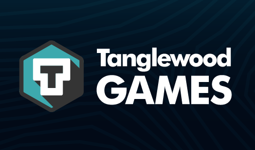
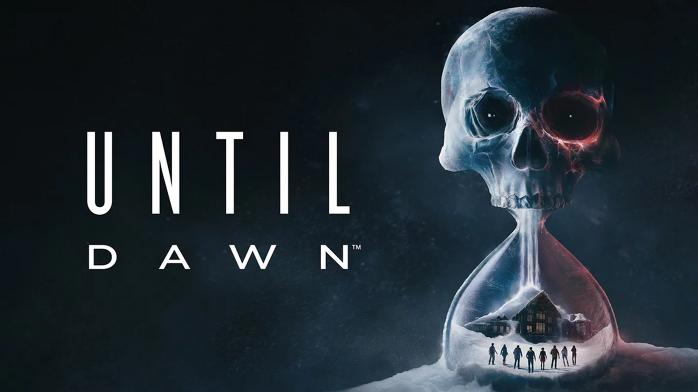
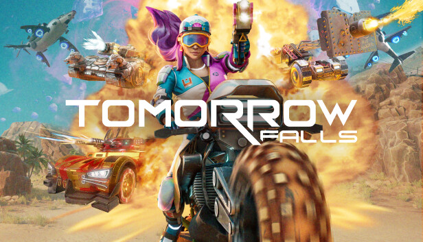
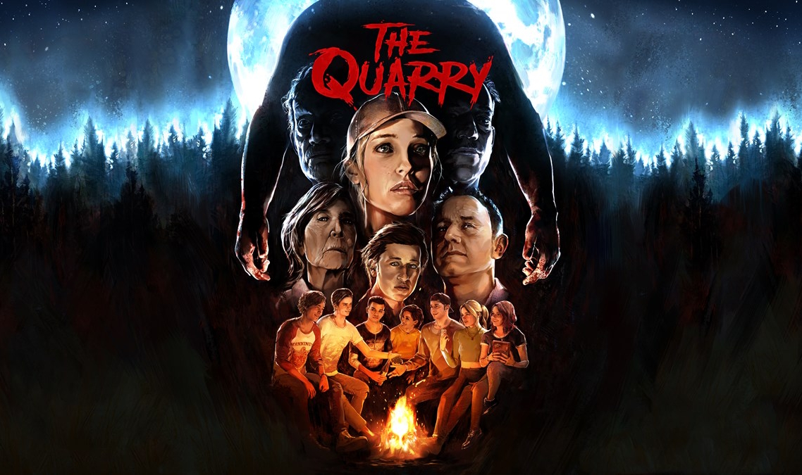
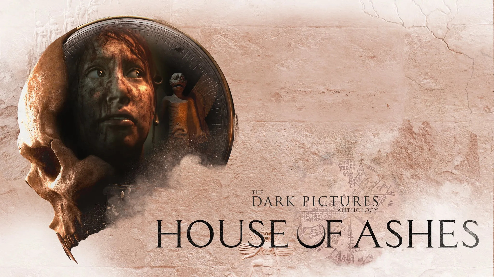
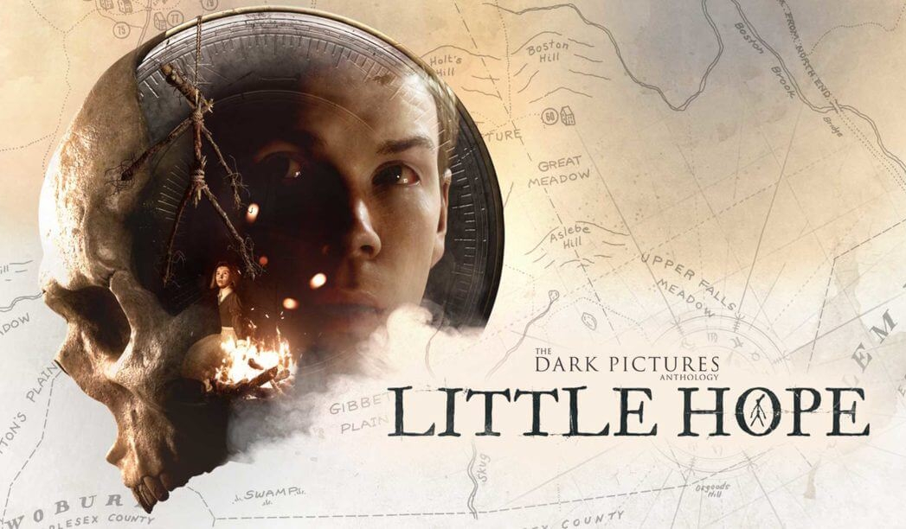

About
My name is Jack, and I'm a senior software engineer with a strong focus on Unreal Engine development. My day-to-day involves building clean, maintainable systems, working with complex Blueprints and C++ codebases, and collaborating closely with cross-disciplinary teams to improve tools and workflows.
My background is rooted in game development, but I’m equally passionate about standalone software projects — particularly those that involve solving tricky technical problems or creating polished user interfaces. I enjoy working with C++, C#, and Python across a range of contexts.
I value thoughtful architecture, readable code, and shipping things that actually make people’s lives easier. While I’m currently focused on co-development within a game studio, I’m always curious about new challenges and enjoy connecting with others in the software space.
Services
I’m a senior software engineer specializing in Unreal Engine development. I focus on building modular, maintainable systems with a strong emphasis on UI architecture, Blueprint-C++ integration, and co-development workflows.
-
🎮 Gameplay & Systems Programming
Custom gameplay mechanics and system design using both Blueprint and C++. Scalable, performant code tailored to real-world projects. -
🖥️ UI Development
Responsive HUDs, menus, and in-game interfaces using UMG. I specialize in data-driven UI design and clean architecture to support complex interaction flows. -
🔧 Blueprint Refactoring & Optimization
Untangling legacy Blueprints and improving performance and maintainability through structured C++ migration and modular system design. -
🛠 Tooling & Workflow Support
Internal tools and editor scripting for designers and artists to speed up iteration, reduce human error, and streamline production. -
📦 Standalone Software Development
I also enjoy working on standalone desktop tools and systems using C++, C#, and Python — especially when there's an interesting technical challenge or UX problem to solve.
If you're working on an Unreal Engine project and need support improving your systems, UI, or codebase health — I’d love to help.
Projects







Experience & Education
Professional Experience
-
Tanglewood Games — Hartlepool, Remote
October 2024 – Present -
Ballistic Moon — Woking, Hybrid
October 2022 – September 2024 -
DPS Games / Wargaming UK — Guildford, Hybrid
December 2020 – October 2022 -
Supermassive Games — Guildford, On-Site
July 2018 – December 2020
Education
-
Solent University — BSc (Hons) Games Programming
September 2015 – May 2018
Best Final Year Computer Games Student on the BSc (Hons) Computer Games (Software Development) Course
British Computer Society Award in Business Computing
Contact
If you'd like to get in touch, feel free to use the form below or email me directly. I'm always happy to chat about interesting software projects, Unreal Engine development, or anything in between.
Email: jackisaacs97@gmail.com
LinkedIn: linkedin.com/in/jackisaacs
GitHub: github.com/JackIsaacs